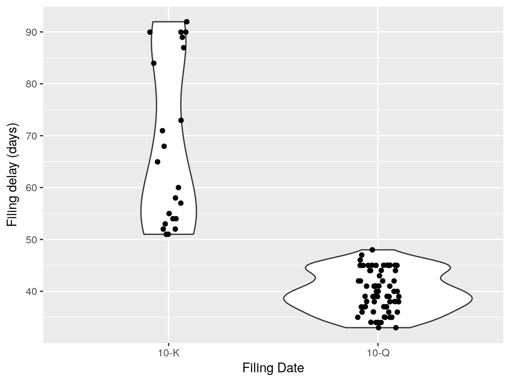
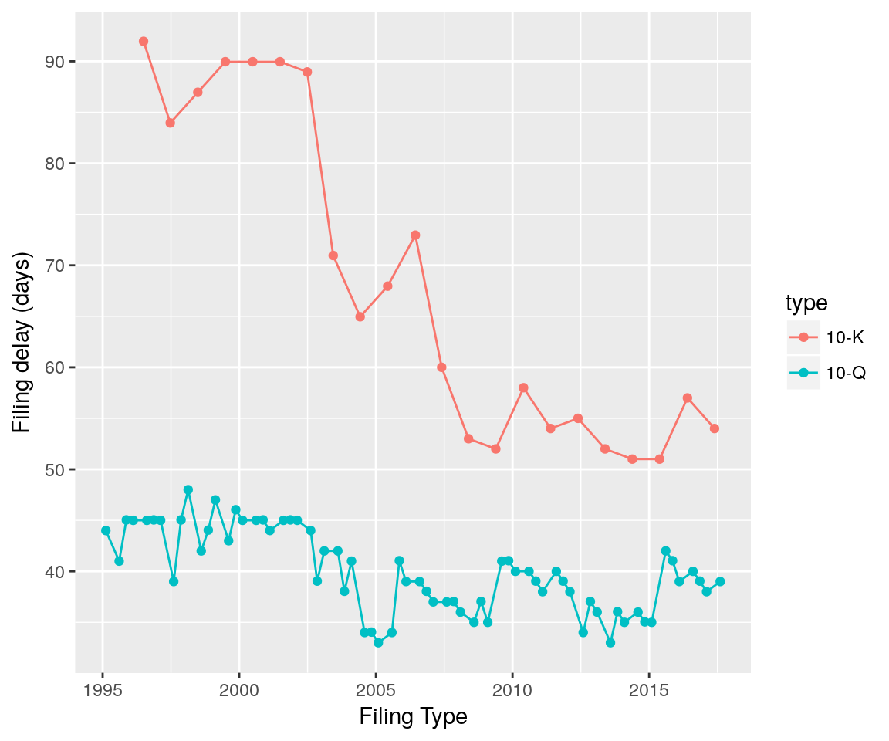

Introducing edgarWebR
Micah J Waldstein micah@waldste.in
2017-08-02
Source:vignettes/edgarWebR.Rmd
edgarWebR.Rmdknitr::opts_chunk$set(collapse = T, comment = "#>") library(edgarWebR) library(dplyr, quietly=TRUE)
##
## Attaching package: 'dplyr'## The following objects are masked from 'package:stats':
##
## filter, lag## The following objects are masked from 'package:base':
##
## intersect, setdiff, setequal, unionlibrary(purrr, quietly=TRUE) library(ggplot2) set.seed(0451) # Cache http requests library(httptest)
## Loading required package: testthat##
## Attaching package: 'testthat'## The following object is masked from 'package:purrr':
##
## is_null## The following object is masked from 'package:dplyr':
##
## matchesstart_vignette("intro")
## Loading required package: curl## Tracing function "form_file" as seen from package "httr"There are plenty of packages for R that allow for fetching and manipulation of companies’ financial data, often fetching that direct from public filings with the SEC. All of these packages have the goal of getting to the XBRL data, containing financial statements, typically in annual (10-K) or quarterly (10-Q) filings.
SEC filings however contain far more information. edgarWebR is the first step in accessing that data by providing an interface to the SEC EDGAR search tools and the metadata they provide.
Current Features
- Search for companies and mutual funds.
- List filings for a company or mutual fund.
- Get all information associated with a particular filing
Simple Usecase
Using information about filings, we can use edgarWebR to see how long after the close of a financial period it takes for a company to make a filing. We can also see how that time has changed.
Get Data
First, we’ll fetch a bunch of 10-K and 10-Q filings for our given company using company_filings(). To make sure we’re going far enough back we’ll take a peak at the tail of our results
ticker <- "EA" filings <- company_filings(ticker, type = "10-", count = 100) initial_count <- nrow(filings) # Specifying the type provides all forms that start with 10-, so we need to # manually filter. filings <- filings[filings$type == "10-K" | filings$type == "10-Q", ]
Note that explicitly filtering caused us to go from 100 to 97 rows.
filings$md_href <- paste0("[Link](", filings$href, ")") knitr::kable(tail(filings)[, c("type", "filing_date", "accession_number", "size", "md_href")], col.names = c("Type", "Filing Date", "Accession No.", "Size", "Link"), digits = 2, format.args = list(big.mark = ","))
| Type | Filing Date | Accession No. | Size | Link | |
|---|---|---|---|---|---|
| 95 | 10-Q | 1997-02-14 | 0000950005-97-000277 | 118 KB | Link |
| 96 | 10-Q | 1996-11-14 | 0000950005-96-000920 | 87 KB | Link |
| 97 | 10-Q | 1996-08-14 | 0000950005-96-000615 | 72 KB | Link |
| 98 | 10-K | 1996-07-01 | 0000912057-96-013563 | 197 KB | Link |
| 99 | 10-Q | 1996-02-14 | 0000912057-96-002551 | 85 KB | Link |
| 100 | 10-Q | 1995-11-14 | 0000912057-95-009843 | 83 KB | Link |
We’ve received filings dating back to 1995 which seems good enough for our purposes, so next we’ll get the filing information for each filing.
So far we’ve done everything in base R, but now we’ll use some useful functions from dplyr and purrr to make things a bit easier.
# this can take a while - we're fetching ~100 html files! filing_infos <- map_df(filings$href, filing_information) filings <- bind_cols(filings, filing_infos) filings$filing_delay <- filings$filing_date - filings$period_date # Take a peak at the data knitr::kable(head(filings) %>% select(type, filing_date, period_date, filing_delay, documents, bytes) %>% mutate(filing_delay = as.numeric(filing_delay)), col.names = c("Type", "Filing Date", "Period Date", "Delay", "Documents", "Size (B)"), digits = 2, format.args = list(big.mark = ","))
| Type | Filing Date | Period Date | Delay | Documents | Size (B) |
|---|---|---|---|---|---|
| 10-Q | 2019-11-06 | 2019-09-30 | 37.04 | 102 | 13,048,623 |
| 10-Q | 2019-08-06 | 2019-06-30 | 37.00 | 101 | 11,575,034 |
| 10-K | 2019-05-24 | 2019-03-31 | 54.00 | 133 | 16,923,278 |
| 10-Q | 2019-02-06 | 2018-12-31 | 37.00 | 104 | 14,024,047 |
| 10-Q | 2018-11-06 | 2018-09-30 | 37.04 | 103 | 13,828,893 |
| 10-Q | 2018-08-08 | 2018-06-30 | 39.00 | 102 | 12,517,185 |
Basic Analysis
Now our data is arranged, we can run some summary statistics and plot using ggplot2.
knitr::kable(filings %>% group_by(type) %>% summarize( n = n(), avg_delay = as.numeric(mean(filing_delay)), median_delay = as.numeric(median(filing_delay)), avg_size = mean(bytes / 1024), avg_docs = mean(documents) ), col.names = c("Type", "Count", "Avg. Delay", "Median Delay", "Avg. Size", "Avg. Docs"), digits = 2, format.args = list(big.mark = ","))
| Type | Count | Avg. Delay | Median Delay | Avg. Size | Avg. Docs |
|---|---|---|---|---|---|
| 10-K | 24 | 66.77 | 59 | 7,605.28 | 31.25 |
| 10-Q | 73 | 39.71 | 39 | 5,272.68 | 22.66 |
No surprise, yearly filings (10-K’s) are larger and take more time than quarterly filings (10-K’s). Lets see how the times are distributed:
ggplot(filings, aes(x = factor(type), y = filing_delay)) + geom_violin() + geom_jitter(height = 0, width = 0.1) + labs(x = "Filing Date", y = "Filing delay (days)") #> Don't know how to automatically pick scale for object of type difftime. Defaulting to continuous.

We can also examine how the filing delay has changed over time:
ggplot(filings, aes(x = filing_date, y = filing_delay, group = type, color = type)) + geom_point() + geom_line() + labs(x = "Filing Type", y = "Filing delay (days)") #> Don't know how to automatically pick scale for object of type difftime. Defaulting to continuous.

Whether because of some internal change or change to SEC rules, the time between the end of the fiscal year and the 10-K has dropped quite a bit, though there is still a bit of variation.
An interesting extension would be to compare the filing delays to the company’s stock price, overall market performance and other companies to see if there are particular drivers to the pattern.
ggplot(filings, aes(x = filing_date, y = bytes / 1024, group = type, color = type)) + geom_point() + geom_line() + labs(x = "Filing Type", y = "Filing Size (KB)")

The jump in size ~2010 is the requirement for inclusion of financial datafiles starting, but there is still interesting variations.
More to come
The SEC contains a wealth of information and we’re only scratching the surface. edgarWebR itself has a lot more functionality than what we’ve explored here and there is more coming.
How to Download
edgarWebR is available from CRAN, so can be simply installed via
install.packages("edgarWebR")
If you want the latest and greatest, you can get a copy of the development version from github by using devtools:
# install.packages("devtools") devtools::install_github("mwaldstein/edgarWebR")